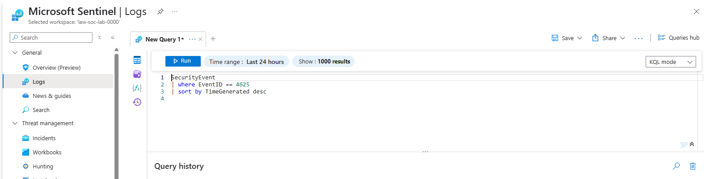
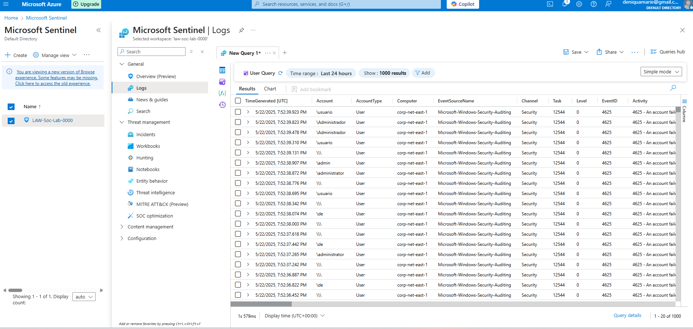

Security operations / Lab walkthrough
Recreate my
Azure honeypot lab.
A lab walkthrough showing failed login activity, KQL analysis, and incident generation in Microsoft Sentinel.
The environment
I built and tested a cloud environment using a Windows virtual machine in Microsoft Azure, Windows Security Logs, Log Analytics, and Microsoft Sentinel. The monitoring focus is failed authentication activity, including Windows Event ID 4625.
Monitoring architecture
- Azure Windows VMGenerate and observe security events.
- Windows Security LogsCollect authentication activity and failed logon events.
- Log Analytics + SentinelCentralize logs for security monitoring.
- KQL detectionIdentify failed authentication patterns.
- Analytics rule + incidentTurn detection logic into security visibility.
Follow the walkthrough
This lab sparked questions from hiring managers during my security role interviews. This is my process, which you can adapt for your own learning environment.
This walkthrough follows my Azure honeypot setup, event collection, investigation, and detection process.
1. Create the Azure VM
My honeypot setup used a Windows 10 VM in Azure. Create a separate lab VM and review the network security group rules for the RDP connection. Keep this learning environment separate from production systems.
2. Connect Windows Security events
Connect the VM to the Log Analytics workspace through Azure Monitor Agent and a data collection rule. Collect Windows Security events and use Microsoft Sentinel with the workspace. Confirm that events reach the SecurityEvent table before continuing.
3. Generate failed login activity
In the lab, I used repeated RDP login attempts with invalid credentials to generate Windows Security Event ID 4625. This records failed authentication activity for analysis.
My initial check used three failed sign in attempts to the employee account. These attempts verify that failed authentication events are being collected.
4. Query the events in Sentinel
I queried the SecurityEvent table for Event ID 4625 and sorted the results with the newest events first.
SecurityEvent
| where EventID == 4625
| sort by TimeGenerated desc
Review the failed login results
The results show repeated Event ID 4625 records, including timestamps, account names, and the computer associated with the events. These records establish the failed login activity visible in the lab.

5. Create the detection rule
I used the following KQL in a scheduled analytics rule. It groups failed logins by account in five minute windows and returns groups with more than five attempts.
SecurityEvent
| where EventID == 4625
| summarize FailedAttempts = count() by Account, bin(TimeGenerated, 5m)
| where FailedAttempts > 5Three attempts alone do not meet this rule’s threshold. To validate the rule, generate more than five failed attempts for the same account within one five minute window in the lab.
Validate the incidents
The incident view shows two medium severity incidents from the brute force logon detection rule. This confirms that the lab progressed from collecting failed login events to generating incidents for review.

6. Add the geolocation view
My honeypot project also used a watchlist named geoip to
enrich source IPs and a workbook named map.json to show
approximate locations. Match the source IPs to the watchlist data and
use the enriched results in the workbook. IP geolocation gives an
approximate network location, not a verified person’s location.
7. Review, troubleshoot, and clean up
If events are missing, check the agent, data collection rule, workspace, and query time range. If no incident appears, review the account grouping, five minute time window, rule threshold, and scheduled rule configuration.
When finished, remove the temporary RDP access and stop or delete the lab VM and resources you no longer need. Review the workspace retention and any resources that can continue to incur charges.
What the evidence shows
This lab demonstrates the path from failed authentication logs to KQL analysis and incident generation. The rule shown groups events by account, so it does not by itself identify a source IP or establish where an attempt originated.
This is my process. You can adapt it for your own learning environment.
Back to my project